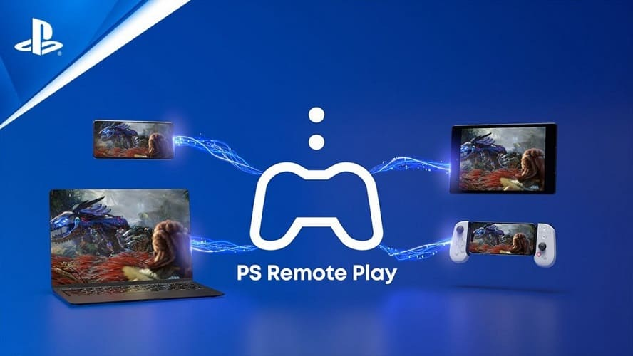
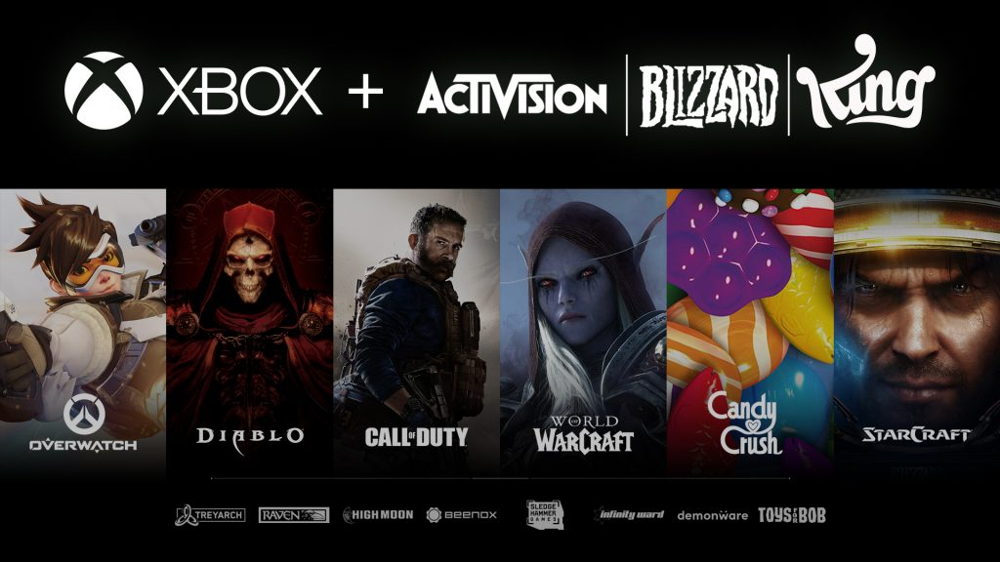
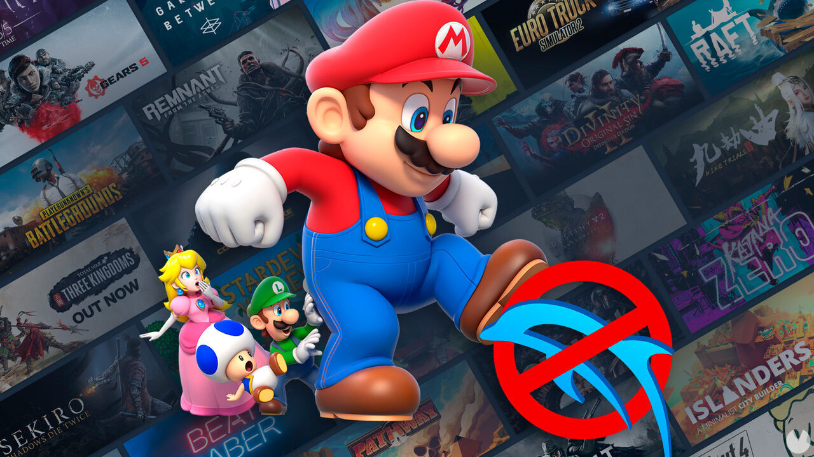
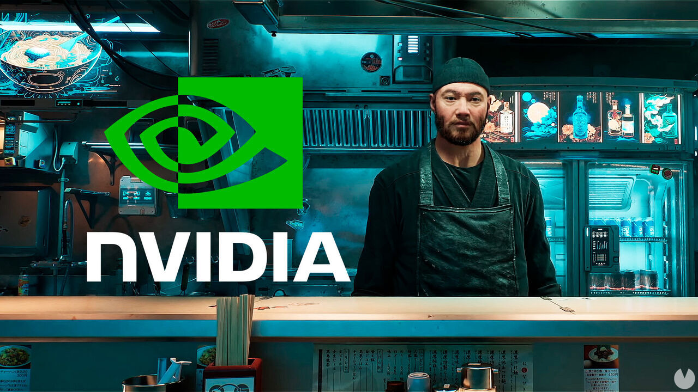

¡Ya Disponible!
Es un hero shooter en primera persona multijugador gratuito desarrollado y publicado por Riot Games. Ver más

El juego mas vendido
FIFA 23 nos acerca a The World's Game con la tecnología HyperMotion2, la FIFA World Cup™ masculina y femenina disponibles durante la temporada, clubes femeninos, función de juego cruzado y mucho más.

NUEVO
La historia de Cal Kestis continúa en STAR WARS Jedi: Survivor™, un juego de acción en tercera persona de proporciones galácticas. Ver más
Noticias
Las noticias del dia de hoy
Q Lite extendería el legado de PS Vita, en este caso para jugar en remoto con la PlayStation 5.El próximo dispositivo portable no estaría pensado para correr juegos nativos y propios tal como ocurrió con PS Vita, sino para funcionar en conjunto con la PlayStation 5.La idea es que corra juegos de PS5 en forma remota gracias a la función Remote Play.
Europa sí que aprueba la compra de Activision Blizzard por Microsoft, aunque con condiciones para los dueños de Xbox. Tras el sorprendente revés de Reino Unido, la operación se encamina en uno de los mercados clave para la industria del videojuego.
El emulador Dolphin iba a llegar a Steam, pero Nintendo ha bloqueado su lanzamiento asegurando que "elude ilegalmente las medidas de protección" y "ejecuta copias ilegales de juegos". Dolphin es un famoso emulador que permite ejecutar en PC copias de juegos de Wii y Game Cube.
Nvidia ACE es una nueva tecnología que usa la nube para que los personajes de videojuegos improvisen conversaciones en base a lo que nosotros le digamos. Se trata de una inteligencia artificial que permite que los NPC se comuniquen con el jugador de una manera natural, siguiendo unas directrices basadas en la misión que tienen que ofrecer pero improvisando según los inputs verbales de quien esté jugando.
